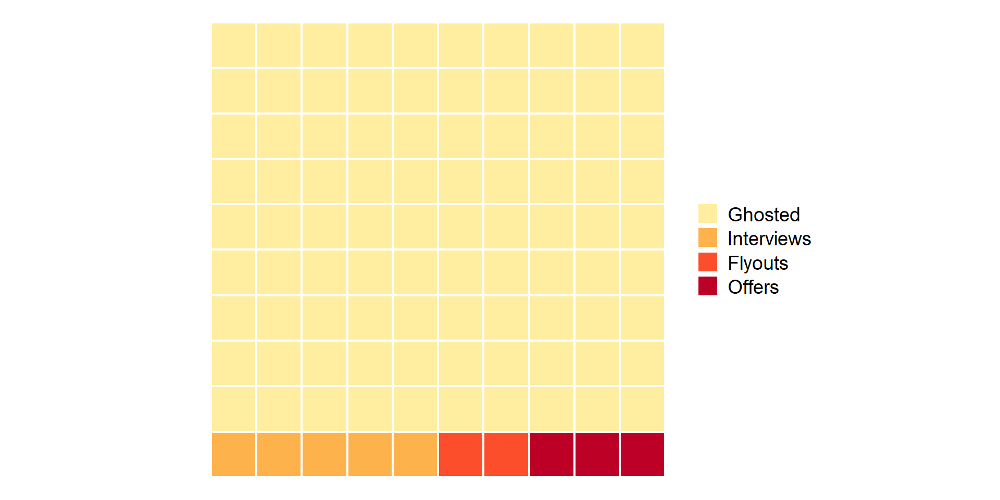
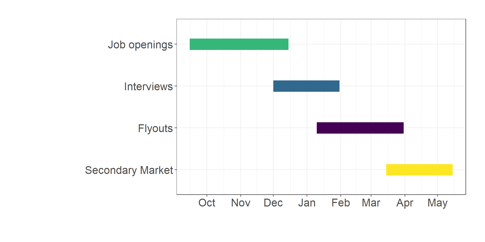
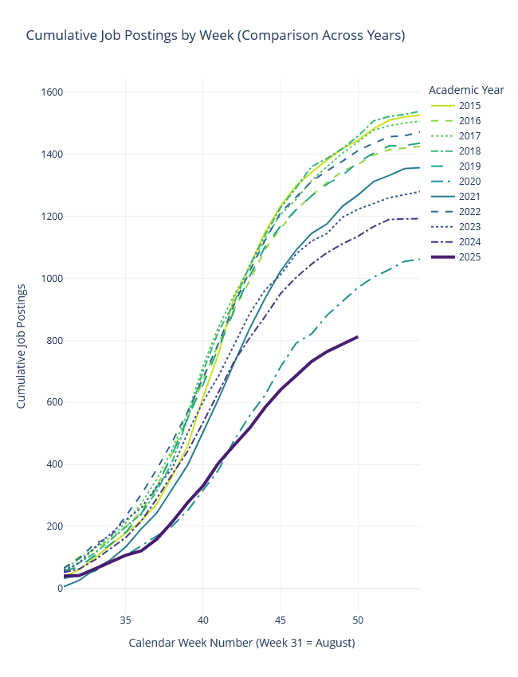
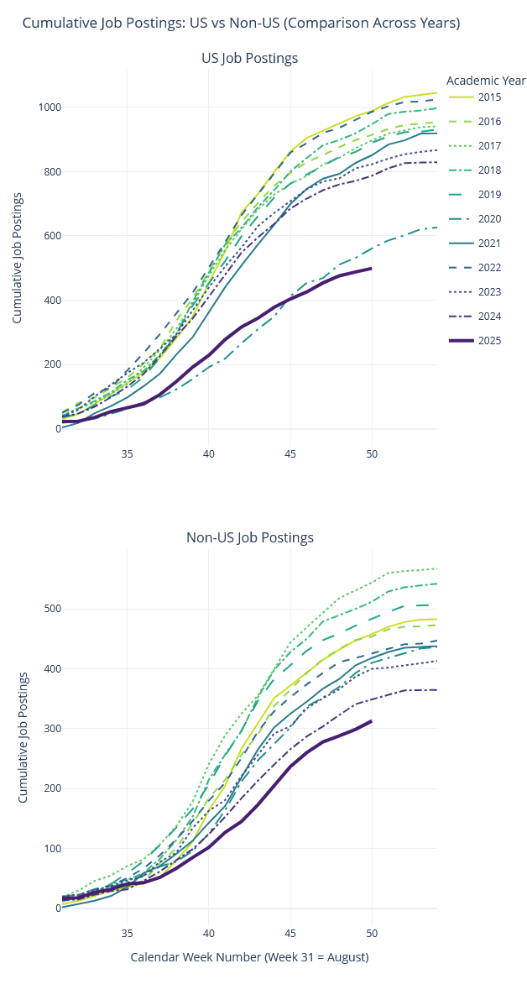
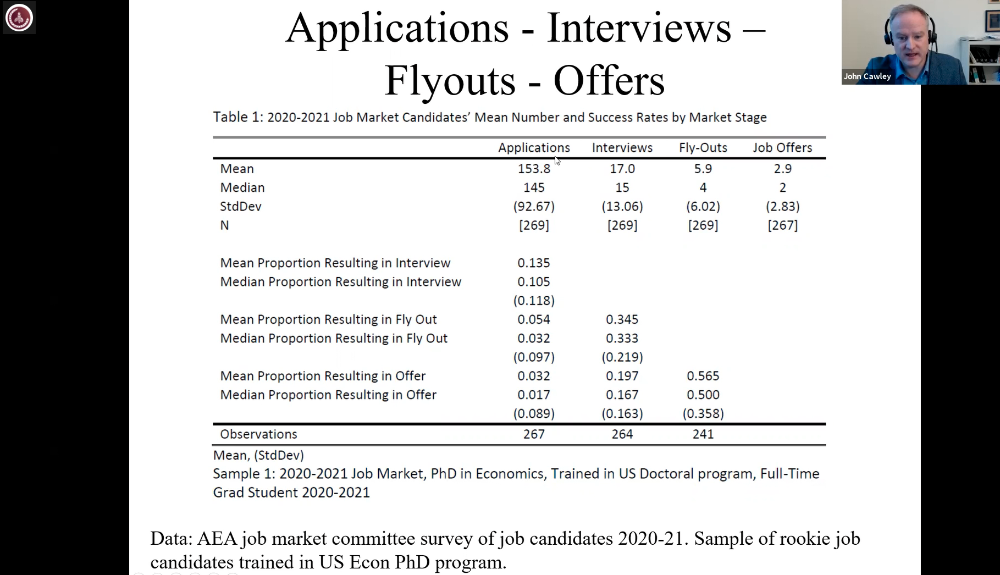

Utrecht School of Economics
February 13, 2026
Standardized hiring system, coordinated around:
Timing
Applications
Staging


Source: Paul Goldsmith-Pinkham’s JOE Tracker — data & code on GitHub
JOE postings have declined steadily since 2019:
Sources: Goldsmith-Pinkham; Cawley (2025)


Source: AEA webinar on job market; see also Cawley (2025) for recent data

Know ins and outs of your JMP;
Answers to most obvious questions:
Work hard on the first 10 minutes of the presentation. Ideally, you need to entice all members of staff.
Questions for other members of staff: check what they work on.
Timing (fixed through 2028):
How it differs from the US market (Schindler):
Resources: